Appendix A — Archiving an OSF Account on Zenodo
The Center for Open Science recently announced that the Open Science Framework will no longer host closed repositories. It will continue to host open repositories, but will not accept new files. This means researchers who used the Open Science Framework to store closed repositories will need to download them (and perhaps store them somewhere else), and that they need to host their files elsewhere in the future. In this chapter we explain how to use Metacheck to download all your OSF data, and choose another repository for future use. We recommend the use of Zenodo, and explain how you can upload repositories to Zenodo (either from the OSF, or in the future, local folders you want to share).
A.1 Choosing a Data Repository
There are many data repositories, each with strengths and weaknesses. Some data repositories used in psychology are Zenodo, GitHub, ResearchBox, and PsyArchives. ResearchBox asks users to provide some meta-data when uploading files, which can facilitate - but is typically not sufficient - to classify files. ResearchBox backs up publicly available files as a .zip on Zenodo. GitHub also offers storage for data and code. GitHub itself is not a stable storage (e.g., it can be changed or), but it is straightforward to create a release that is also archived on Zenodo. Zenodo is hosted by CERN and commissioned by the European Commission through the OpenAIRE project. PsyArchives is hosted by ZPID, manually checks data uploads, requires researchers to provide meta-data to make the data FAIR, and allows researchers to share their files under restrictions. While public files on PsychArchives can be downloaded automatically, files shared under more restrictive licenses can be downloaded manually, but not by software. Zenodo and GitHub allow users to access files through a public API. Files on PsychArchives can als be accessed through an API, even though it is not publicly described. ResearchBox does not have an API yet, which is an important limitation for machine accessibility. For example, while our R package Metacheck can automatically download all OSF files through the OSF API, retrieve the meta-data, and upload all files to Zenodo, the lack of an API means that we can’t automatically upload files to ResearchBox for you.
The R package Metacheck contains a repo_check() module that resolves links to OSF, GitHub, Zenodo, and PsychArchives to their respective APIs, lists every file with its size and type, and flags components that are private, embargoed, or otherwise inaccessible to a machine. The code_check and data_check modules (explained in their respective chapters) can download files selectively (e.g., researchers can only download code files). The package can also scrape the ResearchBox website and download the zip archive that contains all shared files, but due to the lack of an API, it can’t retrieve the information that researchers provided.
PsychArchives and ResearchBox make it possible to share an anonymous link to the datafiles for peer review. GitHub repositories can be made anonymous for blind peer review through Anonymous GitHub. Zenodo allows users to create a new upload in Zenodo, keep it private, fill in the metadata while not disclosing any personal information, and without publishing the record, click Share, Links, and create a secret link with the permission that people with the link “Can preview draft”. This allows reviewers to access the unpublished draft, while the files remain invisible to the public. When shared publicly, Zenodo and PsychArchives allow users to create a Digital Object Identifier, which provides a stable link to the files.
PsychArchives is limited to psychology and related disciplines. If you work in psychology, it is a solid choice for a repository, and its requirement to provide extensive metadata might be effortful, but facilitates FAIR re-use, as long as files are shared publicly. ResearchBox is an easy to use solution if you want to make your data available to other people for manual download, but until it has an API, software can’t easily interact with ResearchBox. Zenodo is often the best general-purpose archival repository, whether it is used directly, or through ResearchBox or a GitHub release linked to Zenodo, although domain-specific repositories can be preferable when they store more detailed metadata. Never share data on your personal homepage, or in a cloud storage service such as dropbox or OneDrive, as such files can’t be approached through an API, and are not stable.
A.2 Downloading all your private Repositories from the Open Science Framework
The whole process has two steps:
- Create an access token for the OSF.
- Download your OSF projects onto your own computer.
A.3 Before you start
You need R (version 4.3.0 or newer) and, ideally, RStudio. You also need the metacheck package. The functions in this chapter are part of the development version, so install that rather than the stable release. The Setting up Metacheck chapter explains this in full; the short version is that the development version is published on the scienceverse R-universe as a separate package called metacheck.dev, built automatically from the dev branch. It is supplied as a pre-compiled binary on Windows and macOS, so you do not need any build tools:
install.packages("metacheck.dev",
repos = c("https://scienceverse.r-universe.dev", "https://cloud.r-project.org"))Because R-universe renames the package, you load it as metacheck.dev:
library(metacheck.dev)Install either the stable metacheck or the development metacheck.dev, and do not load both in the same session. Everything else in this chapter works the same way whichever of the two you have installed.
Alternatively you can install from GitHub, which builds the package from source and therefore needs a compiler (Rtools on Windows, the Xcode command-line tools on macOS, the standard development tools on Linux):
install.packages("pak")
pak::pkg_install("scienceverse/metacheck@dev")A source install keeps the name metacheck, so you load it with library(metacheck).
You can type commands into the console, which is the panel in RStudio where R shows its output and waits for you to type, or in a new R file, where you can copy paste lines of code, and run them individually, or all together. When this chapter shows a line like osf_pat(), type it into the console or your R file, and press Enter or CTRL+Enter on the line of the code to run it.
Load the package:
A.4 Step 1: Create your access tokens
An access token is a long string of letters and numbers that proves to a website that a program is acting on your behalf. It works like a password that you give to one specific program, and that you can revoke without changing your real password.
A.4.1 Why you need an OSF token
Without a token, the OSF allows only 100 requests per hour, only for public OSF projects. Listing all files in a large account uses far more than that, so a download will stop part way through.
With a token, you may make 10,000 requests per day, and you can also reach your own private projects, which are invisible without a Token.
A.4.2 Creating the OSF token
Go to https://osf.io/settings/tokens. If you are not logged in, log in first and then open that link again.
Click the Create Token button.
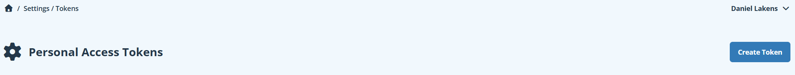
Give the token a name that will remind you what it is for, such as metacheck. Then tick the osf.full_read scope. This lets the token read everything in your account, including private projects, but not change anything.
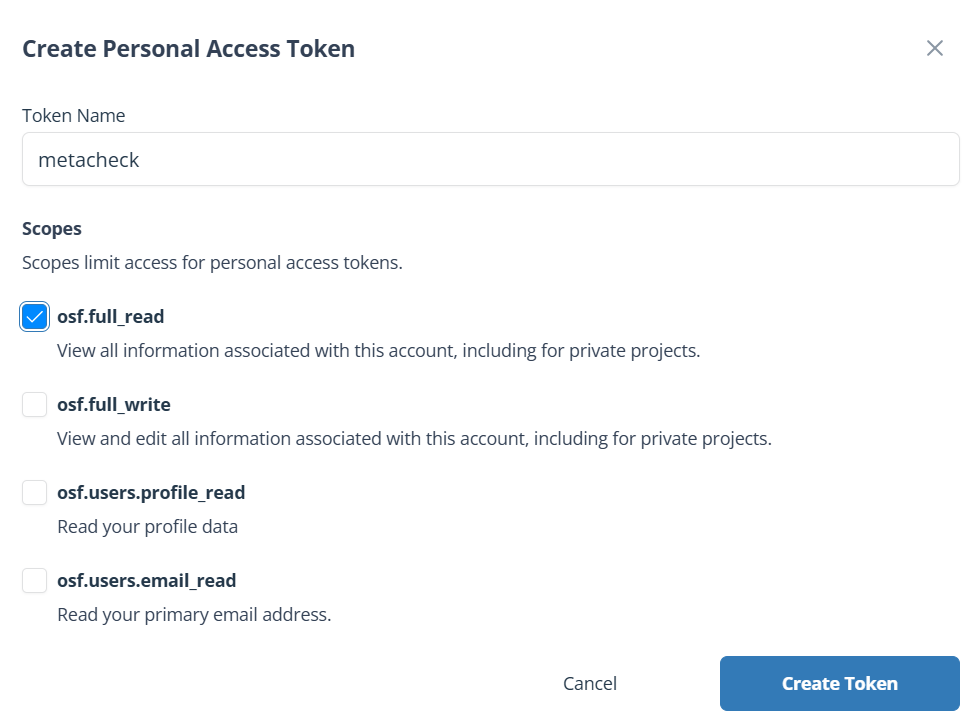
osf.full_read is enough for everything in this chapter, because you are only reading from the OSF and writing to Zenodo. Only tick osf.full_write if you intend to change things on the OSF, which metacheck does not do.
Click Create Token. Your token now appears on screen.
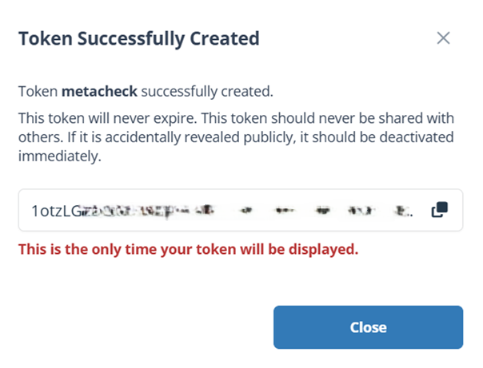
If you navigate away without copying it, you cannot get it back, and you will have to create a new one. Copy it now.
Click the Copy symbol next to the token.
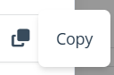
A green bar appears briefly in the top right to confirm the copy succeeded.
A.4.3 Storing the OSF token
Now store the token so that R finds it automatically every time it starts. R reads a file called .Renviron when it starts, and anything in that file becomes available to your session.
Type this in the R console and press Enter:
usethis::edit_r_environ()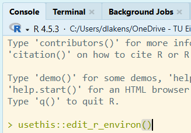
A file called .Renviron opens in the editor. Add this line, replacing the placeholder with the token you copied. Keep the quotation marks:
OSF_PAT="paste-your-token-here"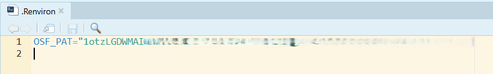
Save the file with Ctrl+S, then restart R with Ctrl+Shift+F10. The restart matters: .Renviron is only read when R starts, so the token does not exist in your session until you restart.
Check that it worked:
osf_pat()This should print your token. If it prints "" (two quotation marks with nothing between them), the token is not being found. The usual causes are forgetting to restart R, forgetting the quotation marks, or a missing blank line at the end of the file.
If you would rather not store the token in a file, you can set it for the current session:
osf_pat("paste-your-token-here")This is forgotten when you close R.
A.4.4 Creating the Zenodo tokens
Zenodo runs two entirely separate websites:
The sandbox, at https://sandbox.zenodo.org, which is for practising. It behaves exactly like the real thing but nothing on it is permanent, and its identifiers do not resolve publicly. It is periodically wiped. We strongly recommend making an account here as well, in addition to your normal Zenodo account, to test out whether you are correctly uploading your files, before you use the Metacheck functions to actually upload all your files automatically.
The real Zenodo, at https://zenodo.org, where deposits are permanent.
They have separate accounts and separate tokens. A token from one will not work on the other. This is deliberate, and it is what makes it safe to practise.
Start with the sandbox. Register at https://sandbox.zenodo.org/login/ — your real Zenodo login does not work there, so you need a separate account. Then follow exactly the same steps below, but on the sandbox website.
Log in to Zenodo. Logging in with your ORCID is usually easiest. From the dropdown menu in the top right, choose Applications.
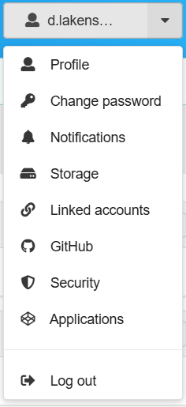
You will see the applications page.
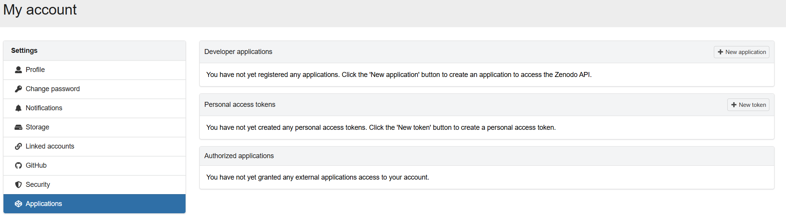
Click + New Token. Give it a name you will recognise, such as metacheck. For the scopes, tick deposit:write and deposit:actions.
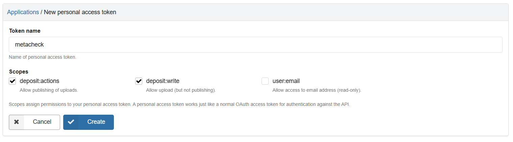
deposit:write allows creating a deposit and adding files to it. deposit:actions allows publishing it. You need both, even though you will probably publish by hand through the website rather than from R.
Click Create. The token appears in pink text.
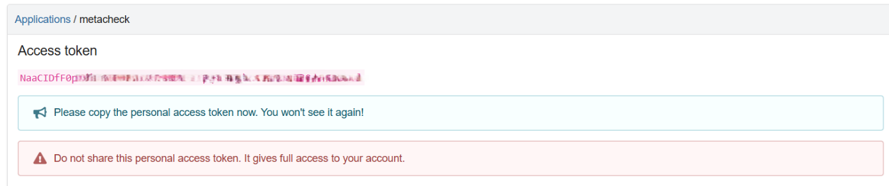
Copy it and store it somewhere safe, then click Save. As with the OSF, you cannot see this token again afterwards.
Add your tokens to .Renviron in the same way as before, using these names:
ZENODO_SANDBOX_PAT="paste-your-sandbox-token-here"
ZENODO_PAT="paste-your-real-zenodo-token-here"Save, restart R, and check:
zenodo_pat(sandbox = TRUE) # your sandbox token
zenodo_pat(sandbox = FALSE) # your real Zenodo tokenA.5 Step 2: Download your OSF projects
A.5.1 Finding your OSF user ID
Your user ID is the five-character code in the address of your OSF profile page. Go to: https://osf.io/profile and it will be provided on the screen:
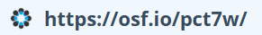
If your profile is at https://osf.io/pct7w, your user ID is pct7w.
A.5.2 Looking at what you have before downloading
It is worth seeing what is there before downloading anything. The code below retrieved all the OSF projects of Daniel Lakens. Unless you have an OSF personal access token of Daniel Lakens, you can only see his public projects. This request can take a while if you have many projects on the OSF:
projects <- osf_user_projects("pct7w")The code returns a table with one row per project and these columns:
| Column | Meaning |
|---|---|
osf_id |
The project’s five-character OSF code |
name |
The project’s title |
category |
What kind of node it is, usually project
|
public |
TRUE if anyone can see it, FALSE if private |
osf_url |
The web address of the project |
An OSF project can contain components, which are sub-projects. These are not listed separately, because downloading a project automatically brings its components’ files with it, however deeply they are nested.
A.5.3 Downloading a single project
You can download a single project, using the code from the osf_id column in the table projects created above:
# just one project, by its code
osf_file_download("8uqfb", download_to = "how_many_registered_studies_are_published")The name you specify is the folder the download goes into, so make sure the name is meaningful. Inside it, the project gets a folder named after its OSF ID, and each component gets a folder named after the component’s title with its own OSF ID appended, so that two components sharing a title cannot collide and every folder can be traced back to the component it came from. If you enter an ID that does not exist, or one that has been deleted from the OSF, Metacheck will provide a warning.
A.5.4 Downloading everything
To download every project the account contains, give the user ID directly:
result <- osf_file_download("pct7w", download_to = "my_osf_archive")That is all you need: everything is downloaded, with no size limits, because this function exists to download a repository in full.
The arguments you may want to change:
-
download_tois the folder to save into. It is created if it does not exist. In this example the files go into the R working directory, in a new folder calledmy_osf_archive. -
modedecides how much work is done before downloading. See the next section; the default is right for archiving your own account. -
max_file_sizeandmax_download_sizeare largest single file and largest total per project, in megabytes. Both areNULLby default, meaning no limit. Set them when you are looking at somebody else’s repository and do not want to pull down their large files. Neither applies in the defaultmode = "all", because there is no file list to filter. -
metadataalso retrieves the parts of a project that are not files. It isTRUEby default; see the section on wikis and logs below. -
max_folder_lengthshortens folder names to a set number of characters. Set it if you are on Windows and the full paths would otherwise exceed the 260-character limit. It has no limit by default. -
ignore_folder_structureputs every file into a single folder instead of reproducing the folders the project had. It isFALSEby default. -
osf_patis your OSF token. You can leave it out if you stored the token in.Renvironas described above; passing it here sets it for the rest of the session.
Each project is saved in a folder named after it, and running the same command again reuses that folder, so nothing is duplicated into a second folder. Whether the second run does less work depends on the mode. In mode = "select" it does: files already on disk at the size the OSF reports are not fetched again, so an interrupted download can simply be repeated and only what is missing is retrieved. In the default mode = "all" it does not: that mode never lists the files, so it has no way of knowing what a component should contain, and it fetches every archive again. Use mode = "select" when the ability to resume matters more to you than speed.
Downloading a whole account means listing every project and fetching every file. For an account with a hundred projects this can take hours and use a lot of disk space. Metacheck makes it easy to download only one of your projects, or a list of some of the projects.
A.5.5 Downloading only some projects
Because osf_user_projects() returns an ordinary table, you can select whichever subset you want and pass it straight back. This is the case that matters most here: public repositories will remain available on the OSF, so the projects you actually need to rescue are the private ones. The public column is FALSE for those, so one line selects them:
# download your private projects (as the OSF will no longer host them)
projects |>
subset(public == FALSE) |>
osf_file_download(download_to = "my_private_osf_archive")
A.5.6 The mode argument
By default, osf_file_download will download all files from your repository. This uses the default mode = "all" setting. The OSF can bundle a component’s files into a single compressed archive, so metacheck asks for one archive per component and never lists the individual files.
It is also possible to only download a selection of files. For example, if you already have a back-up of all stimuli, and their file-size is large, you might want to exclude these files from the download. Alternatively, you might want to reduce the size of all downloaded files by only downloading smaller files.
The mode = "select" option lists every file through an individual API call to the OSF. It retrieves information about each file (such as the name, the extension, and the file size), which is what lets you select which files to download, and what max_file_size and max_download_size filter on. Listing all individual files makes downloading large repositories extremely slow. For example, Daniel Lakens was a co-author on Many Labs 2 (OSF id 8cd4r, 44 components and 1,907 files). Listing every file from the Many Labs 2 project takes 63 minutes and 909 API requests, and only then can files be downloaded. Fetching the same project as archives using the default mode = "all" setting retrieved all 1.9 GB of files in under 7 minutes.
There are two further values. mode = "zip" lists the files first, exactly like "select", but then transports whole components as archives; this makes fewer requests than "select", though it is not faster, and its unzip argument decides whether the archives are unpacked after downloading or kept as zip files. mode = "files" is an older name for "select" and is still accepted.
The code below makes these almost 2000 API calls, and subsequently downloads only files smaller than 1 MB, using the mode = "select" option.
# only files under 1 MB, each verified against its reported size
osf_file_download("8cd4r", download_to = "Many_Labs_2",
mode = "select", max_file_size = 1)Files stored on a linked service such as GitHub or Dropbox are not in any OSF archive, so those are still fetched one at a time. They are downloaded, and end up in their own sub-folder.
Without an OSF token, osf_user_projects() only lists the public projects, so subset(public == FALSE) would return nothing. If that selection is empty and you were expecting projects, check osf_pat() returns your token.
The |> symbol is called a pipe. It takes whatever is on its left and passes it as the first argument to the function on its right, which lets you read a sequence of steps from top to bottom.
A.5.7 Wikis, logs, and other things that are not files
An OSF project is often a record as much as data storage The wiki may hold the protocol, the reasoning behind a decision, or the interpretation of the results, and the activity log is the only account of when things changed. None of that is a file, so downloading the files alone would lose it.
Metacheck therefore also retrieves this metadata in wikis and logs by default. Inside each project’s folder you will find an _osf_metadata folder containing:
| File | What it holds |
|---|---|
wiki_<name>.md |
One file per wiki page, as Markdown, so headings and lists survive. Only the current version is saved. |
logs.csv |
The project’s activity log, one row per entry, with the date and what happened |
metadata.json |
Title, description, tags, licence, contributors with their ORCIDs, dates, citation, registrations and forks, exactly as the OSF returned them |
README.md |
A readable summary of all of the above |
A project with no wiki simply has no wiki_ file, and the README.md says so explicitly. This costs about four extra API requests per project. If you want the files only, turn it off:
osf_file_download("pct7w", download_to = "my_osf_archive", metadata = FALSE)A.5.8 Checking that the download worked
When the download finishes, every file that was supposed to arrive is checked against your disk, and against the size the OSF said it should be. This matters when you are archiving hundreds of files in one go.
What the result looks like depends on the mode, because the two modes know different things.
In mode = "all" there is no file listing, so the table has one row per component:
| Column | Meaning |
|---|---|
folder |
The folder this component was saved in, named after its title with its OSF code appended |
osf_project |
The component’s OSF code |
osf_url |
The component’s web address |
title |
The component’s title on the OSF |
files |
How many files arrived in that folder |
bytes |
How much they add up to |
download_path |
The full path of the folder |
downloaded |
TRUE if the component’s archive was retrieved |
# keep the result of the download so you can look at it
# This also makes it easier to upload the files you downloaded to for example Zenodo
result <- osf_file_download("8uqfb", download_to = "how_many_registered_studies_are_published")
# how many files arrived in total, across all components
sum(result$files)
# any component whose archive could not be retrieved
subset(result, !downloaded)In mode = "select" every file was listed, so the table has one row per file. Alongside the file’s own details (name, size, filetype, provider, and osf_id, which is the file’s ID rather than the project’s), these columns tell you what happened:
| Column | Meaning |
|---|---|
downloaded |
TRUE only when the file is really on disk. For files the OSF stores itself it must also be the size the OSF reported; a file that arrived truncated counts as not downloaded, because a half-file that looks complete is worse than an absent one. |
size_on_disk |
How large the file actually is, in bytes. Comparing it with size shows you why a file failed. |
attempted |
FALSE when you excluded the file with max_file_size or max_download_size. Those are not failures, so they are counted separately. |
path |
Where the file was saved, relative to download_path
|
download_path |
The full path of the folder the project was saved in |
osf_project |
The OSF ID of the project the file came from |
osf_url |
The project’s web address |
If a project links to an external service, the OSF reports the file size it recorded the last time it looked at that service, and that figure goes stale as soon as the file changes there. Those files are therefore checked for presence only, not size. Files the OSF stores itself are checked both ways.
To check everything arrived, keep the result of the download in a variable. These columns only exist in mode = "select", so this example asks for that mode:
checked <- osf_file_download("8uqfb", download_to = "how_many_registered_studies_are_published",
mode = "select")
# how many files arrived, out of those that were meant to
sum(checked$downloaded)
sum(checked$attempted)
# list anything that did not arrive
subset(checked, !downloaded & attempted)If some files are missing, run the same download command again. Occasionally the OSF refuses a request when many arrive at once; Metacheck waits and retries twice automatically, but a file can still be missed on a busy day. In mode = "select" the download resumes into the same folder, so only the missing files are fetched, and you will see a message such as 54 of 57 files from pngda are already on disk and were not downloaded again.
A.6 Uploading Files to Zenodo
A.6.1 Practise on the sandbox first
zenodo_upload() sends files to the sandbox unless you tell it otherwise. Do a complete run there first. Nothing on the sandbox is permanent, so you can make mistakes freely. As you are automatically uploading files, and files on Zenodo can’t be deleted, and get a DOI (which is costly, and makes the files permanent) you want to test if you are doing things correctly first.
Before uploading files, check carefully whether you are not uploading data with personally identifying information! You might have kept some folders private because they contain data you can’t share. If so, this data has now been downloaded to your computer, and need to be removed before you continue with uploading data to Zenodo.
You can use the data_check module in Metacheck to assist you in checking if there is personally identifying information. It will warn for columns consisting information such as email addresses, IP addresses, and open text entries that might contain sensitive data.
Take the result of the download – the result from the previous step – and pass it straight on if all data can be shared publicly. Note that the folder name will be used on Zenodo as the file name by default, so make sure the file name is meaningful and clear.
result |> zenodo_upload()Or point at a specific folder. In the example repository, a folder called ‘Non-Anonymous Data’ is downloaded alongside the main public folder. This folder can’t be shared. So we only select the folder with data that can be shared for upload to Zenodo.
zenodo_upload("how_many_registered_studies_are_published/An_Inception_Cohort_Study_Quantifying_How_Many_Registered_Studies_are_Published_8uqfb")Before anything is sent, you will see a summary of how many folders and files are involved, how large they are, whether they will be zipped, in how they will be zipped, which server they are going to, and whether they will be published. You then have to confirm. Nothing is uploaded until you do. This confirmation is skipped when R is running without a person at the keyboard, such as in a script started from the command line, where the upload simply proceeds. You can turn the question off yourself with ask = FALSE.
The other arguments you may want to change:
-
upload_typeis the kind of record Zenodo creates. It is"dataset"by default;"publication"and"software"are the other common choices. -
upload_osf_metadatadecides whether the_osf_metadatafolder thatosf_file_download()saved inside each project is uploaded along with the files, so that the archive on Zenodo describes itself. It isTRUEby default. Setting it toFALSEdeposits only the data files; the metadata is read either way, because that is where the deposit’s title, licence and authors come from. -
metadatatakes a list of extra fields to add to every deposit, overriding whatever was taken from the OSF. -
max_file_sizeis the largest file to upload, in megabytes. Anything larger is skipped and reported. It isNULLby default, meaning no limit.
A.6.2 What ends up on Zenodo
One Zenodo deposit is created per folder. Where the folder came from an OSF project, the details are taken from that project automatically:
- the project’s title,
- its description,
- its contributors as the authors, with their ORCIDs where the OSF has them,
- its tags as keywords,
- its licence, and
- a link back to the original OSF project.
If the OSF project has no licence that Zenodo recognises, cc-by-4.0 is used and you are warned that this happened. You can choose a different one:
result |> zenodo_upload(license = "cc0-1.0")A.6.3 Folders, and why Zenodo does not have any
Your download almost certainly has folders in it. A typical project looks something like this:
Study/
README.md
Data/raw.csv
Code/01_analysis.R
Materials/stimuli.png
Materials/instructions.mp4Zenodo only stores files, and it has no option to create folders. In its own words, in answer to the question “Can I upload folders/directories?”:
Zenodo does not support uploading and organising files into folders/directories. Instead, you can create a ZIP archive and upload it, in which case Zenodo will display the file structure inside the ZIP.
A Zenodo record is a flat list of files and nothing else. So there are exactly two things zenodo_upload() can do with your folders. It does the first of them unless you say otherwise.
Pack the folder into a ZIP archive. This is what happens by default. The folder is packed into an archive, which Zenodo displays with its structure intact. Someone who wants to access your files can download the files, unzip them, and they will have a local copy which has the original folder structure, so a re-user sees Data/, Code/ and Materials/ as you arranged them:
result |> zenodo_upload()The advantage is that your project arrives as a project rather than as an unstructured long list of files. The downside is that a reader who wants one small data file must download the whole archive. This could be a problem if you have a folder with 40GB of materials that you used in your study (e.g., video files), when all a re-user wants is to take a look at the data file and the code file. Metacheck solved this problem through it’s zenodo_file_download() function, which is smart enough to be able to peek inside a zip file, and download only the file types you want (e.g., data and code files). Metacheck is able to do this because Zenodo is a really well-thought through data repository that allows users to download parts of .zip files. This function will be explained later.
The second option is to upload the files individually, ignoring the folder structure. This might be fine if you are sharing just a few files, or many similar files. Set as_zip = FALSE and every file is uploaded on its own, with the folders dropped:
result |> zenodo_upload(as_zip = FALSE)The five files above would then appear on Zenodo as 01_analysis.R, raw.csv, instructions.mp4, stimuli.png, and README.md. Names are kept short and readable. A folder name is only added when two files would otherwise clash, so a project with wave1/data.csv and wave2/data.csv produces wave1__data.csv and wave2__data.csv rather than one file is overwritten by the other.
The advantage is that a reader can see each file, preview it in the browser, and download just the one they want. The cost is that the arrangement of your project is gone, and a reader has to work out from the names alone which file was data and which was a stimulus. For a small flat folder, where the structure carries no meaning worth keeping, that is a reasonable trade-off.
A.6.4 Splitting materials into their own archive
A single archive would be a poor default for a large project. Researchers shared data and code for people who want to re-analyze their data, and they share materials for researchers who want to replicate their study. These are two different use-cases. And as materials are often much larger than data files, zenodo_upload() by default creates two archives, one for materials and another for everything else. If there are no materials, only one zip file is created.
So the default upload produces two archives:
Study.zip README.md, Data/raw.csv, Code/01_analysis.R
Study_materials.zip Materials/stimuli.png, Materials/instructions.mp4Both archives store the same Study/ folder at the top, which is what makes it possible to unzip both files, and recreate the original folder structure, while also enabling re-users to only download one of the two archives, and have only the files they need.
A.6.5 Choosing what gets split
Files are sorted into six categories: data, code, materials, documentation, output, and unknown. These are the same categories, worked out by the same function, that the repo_check() function in Metacheck uses to classify files. The parameter split_materials says which of those categories to put in their own archive. It defaults to "materials". You can change it. Set split_materials = NULL when the project is small enough that splitting only makes it harder to use:
result |> zenodo_upload(split_materials = NULL)Pass more than one category and each gets its own archive, so a reader can take the data and code without your generated figures and tables:
result |> zenodo_upload(
split_materials = c("materials", "output")
)That produces Study.zip, Study_materials.zip, and Study_output.zip. Unzipping all three still rebuilds the original folder exactly.
A.6.6 Downloading Files from ZIP Archives
It is best practice to use the .zip format when archiving files, because it is possible for software to peek inside a .zip without downloading the entire file an unzipping it. On the Zenodo website, an archive is one item. A visitor cannot see what is inside it, cannot preview a single file in the browser, and cannot download one file on its own. Splitting the materials off reduces that cost but does not remove it: the data and code archive is still all-or-nothing.
This is the strongest argument for as_zip = FALSE, and if the people you expect to read your work will be clicking around the Zenodo page by hand, it is a good reason to choose it.
For anyone working from R, however, metacheck removes the problem. zenodo_file_download() takes an unzip_types argument, and when you use it, files are read out of an archive without downloading the archive:
# only the data files, out of whatever archives the record contains
zenodo_file_download("21918913", unzip_types = "data")This works because of two facts about how ZIP archives and Zenodo happen to fit together. A ZIP stores a listing of its contents at the end, and compresses each file inside it separately rather than as one continuous stream. Zenodo serves files over HTTP with byte-range support, meaning a program may ask for particular stretches of a file instead of the whole thing. So metacheck reads the listing from the end of the archive, works out where the files you asked for begin and end, and requests only those stretches. Nothing else crosses the network.
The saving is not marginal. Running the line above on that record, which is a 25.6 MB archive of an ecology study, writes 11 data files totalling 46 kilobytes. The other 25.5 MB is never transferred.
Files keep the folders they had inside the archive, so what lands on your disk looks like the project rather than a heap:
21918913/baumlab-Bruce_etal_2026_JAnimEcol-9fe2cfa/
01_data/KI_Monitoring_SiteData.csv
01_data/summarized_digitization_data.csv
03_tables_figures/Table_1.csv
...The categories are the same six used for splitting – data, code, materials, documentation, output, and unknown – so you can ask for whatever part you need, and combine them:
# just the code, to see how an analysis was done
zenodo_file_download("21918913", unzip_types = "code")
# data and documentation together, so you get the codebook with the data
zenodo_file_download("21918913", unzip_types = c("data", "documentation"))On the record used here, the second of those writes 13 files rather than 11. The first writes only one, which is a useful thing to see: that archive contains no analysis scripts at all, only an RStudio project file and a PDF of the analysis. Asking for "code" correctly reports that there is almost none. A small result is not necessarily a fault in the classification – sometimes it is telling you something about the repository.
max_file_size applies to each file inside the archive rather than to the archive itself, so you can exclude anything unexpectedly large while still taking everything else:
# data files, but nothing above 5 MB
zenodo_file_download("21918913", unzip_types = "data", max_file_size = 5)Note that zenodo_file_download() has different defaults from osf_file_download(): its max_file_size is 10 MB and its max_download_size is 100 MB, rather than no limit. This function is mainly used to look at somebody else’s record, where you rarely want their largest files by accident. If you are retrieving a record in full, set both to NULL:
zenodo_file_download("21918913", max_file_size = NULL, max_download_size = NULL)Leaving unzip_types unset keeps the old behaviour: archives are downloaded whole and left zipped.
Reading inside an archive depends on the server allowing range requests and on the archive’s listing being readable. When either fails, metacheck says so and downloads the whole archive instead, exactly as it would have done otherwise. The option can save you a download; it cannot cost you a file.
None of this helps somebody browsing Zenodo in a web browser, so it does not fully answer the objection. It does mean that the archive you upload stays usable to anyone working in R, which is the audience most likely to want your data and code rather than a look at your stimuli.
A.6.7 Drafts, and publishing
Deposits are created as drafts. A draft is private, can be edited or deleted, and does not have a permanent identifier yet. Nothing is published unless you explicitly ask.
The function returns a table with a url for each deposit. Open those links, check the files and the description are right, and then press Publish on the Zenodo website when you are satisfied.
Once a record is published on zenodo.org it is permanent. It is given a DOI, and neither the record nor the DOI can be deleted. Check your drafts carefully before publishing, and practise on the sandbox first.
You can publish from R by setting publish = TRUE, but the safer habit is to review each draft on the website and publish by hand.
A.6.8 Uploading to the real Zenodo
When a sandbox run has gone the way you expect, repeat it against the real Zenodo by adding sandbox = FALSE:
result |> zenodo_upload(sandbox = FALSE)This still creates drafts, so you still have to publish each one yourself.
A.7 The whole process in one place
library(metacheck)
# 1. see what is there
projects <- osf_user_projects("pct7w")
projects
# 2. download the private ones -- everything, no size limits, the fast way
result <- osf_file_download(
subset(projects, public == FALSE),
download_to = "my_osf_archive"
)
# 3. check everything arrived
sum(result$files) # how many files in total
subset(result, !downloaded) # any component that failed
# 4. practise the upload on the sandbox
result |> zenodo_upload()
# 5. when that looks right, upload for real (still as drafts)
result |> zenodo_upload(sandbox = FALSE)A.8 When something goes wrong
osf_pat() returns "". R cannot find your token. Restart R, then check .Renviron has the line OSF_PAT="..." with quotation marks and a blank line at the end of the file.
“No token found for the Zenodo sandbox”. The sandbox needs its own token stored as ZENODO_SANDBOX_PAT, from an account registered at sandbox.zenodo.org. A token from the real Zenodo will not work there.
“Zenodo did not accept the token”. The token is for the other Zenodo server, was typed incompletely, or lacks the deposit:write scope. Create a new one.
The download stops part way, or many files fail. Usually the OSF rate limit. Set an OSF token if you have not, and run the same command again with the same download_to. The folder is reused either way. In mode = "select" files already on disk at the right size are not fetched twice, so only the missing ones are downloaded; in the default mode = "all" every archive is fetched again, because that mode never listed the files and so cannot tell what is already correct.
Some files show downloaded = FALSE. In mode = "select", look at attempted: if it is FALSE you excluded the file yourself with max_file_size or max_download_size, and if it is TRUE the transfer genuinely failed, so run the download again. In mode = "all", downloaded refers to a whole component, so a FALSE there means its archive could not be retrieved.
“could not be found on the OSF” or “has been deleted or withdrawn”. The first means the ID does not exist, so check it against the project’s web address; the second means the project was on the OSF but has since been removed, and its files cannot be recovered.
A private project’s files fail while its file names are listed. The listing and the download are separate requests, and only the listing was authorised. Check osf_pat() returns your token, and that the token has the osf.full_read scope.
A Zenodo deposit is titled after a folder, with “Unknown” as the author. The OSF details for that project could not be read, usually because it is private and your token cannot see it. Correct the draft on Zenodo before publishing.